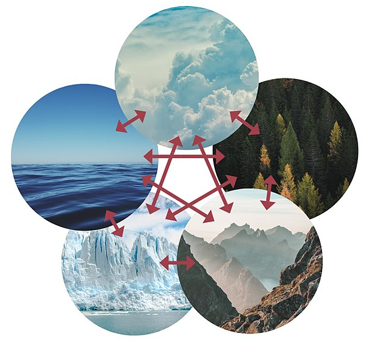
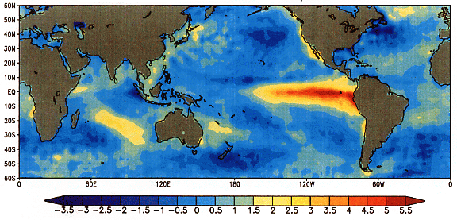

3 Marco de Referencia
3.1 Sistema Climático
El sistema climático es el conjunto de cinco componentes de cuya interacción genera el clima de la Tierra. Estos cinco componentes son: la atmósfera (aire), la hidrósfera (agua), la criósfera (hielo y permafrost), la litosfera (capa rocosa superior de la tierra) y la biósfera (seres vivos) Figure 3.1. Se entiende por clima al clima promedio, generalmente el observado durante un período de 30 años, y está determinado por una combinación de procesos en el sistema climático, como las corrientes oceánicas y los patrones de viento.23 La circulación en la atmósfera y los océanos es impulsada principalmente por la radiación solar y transporta el calor de las regiones tropicales a las regiones que reciben menos energía del sol. El ciclo del agua también mueve energía a través del sistema climático. Además, los diferentes elementos químicos, necesarios para la vida, se reciclan constantemente entre los diferentes componentes.
El sistema climático puede cambiar debido a la variabilidad interna y el forzamiento radiativo. Estos forzamientos externos pueden ser naturales, como las variaciones en la intensidad solar y las erupciones volcánicas, o causados por humanos, como en el cambio climático antropogénico. 1 Los cambios pueden amplificarse mediante procesos de retroalimentación en los diferentes componentes del sistema climático.

3.1.1 Componentes del sistema climático
- La Atmósfera:
- La atmósfera envuelve la Tierra y se extiende a cientos de kilómetros de la superficie. Se compone principalmente de nitrógeno inerte (78%), oxígeno (21%) y argón (0,9%).4 Algunos gases traza en la atmósfera, como el vapor de agua y el dióxido de carbono, son los gases más importantes para el funcionamiento del sistema climático, ya que son gases de efecto invernadero que permiten que la luz visible del Sol penetre en la superficie, pero bloquean parte de la radiación infrarroja que emite la superficie de la Tierra para equilibrar la radiación solar. Esto hace que aumenten las temperaturas de la superficie. El ciclo hidrológico es el movimiento del agua a través de la atmósfera. El ciclo hidrológico no solo determina los patrones de precipitación, sino que también influye en el movimiento de energía en todo el sistema climático.
- La Hidrósfera:
- La hidrósfera propiamente dicha contiene toda el agua líquida de la Tierra, y la mayor parte está contenida en los océanos del mundo. El océano cubre el 71% de la superficie de la Tierra a una profundidad promedio de casi 4 kilómetros (2,5 mi), y puede contener sustancialmente más calor que la atmósfera. Contiene agua de mar con un contenido de sal de aproximadamente un 3,5% en promedio, pero esto varía espacialmente. El agua salobre se encuentra en los estuarios y algunos lagos, y la mayor parte del agua dulce, el 2,5% de toda el agua, se encuentra en el hielo y la nieve.
- La Criósfera:
- La criósfera contiene todas las partes del sistema climático donde el agua es sólida. Esto incluye el hielo marino, los glaciares, las capas de hielo, el permafrost y las capas de nieve. Debido a que hay más tierra en el hemisferio norte en comparación con el hemisferio sur, una mayor parte de ese hemisferio está cubierta de nieve. 11 Ambos hemisferios tienen aproximadamente la misma cantidad de hielo marino. La mayor parte del agua congelada está contenida en las capas de hielo de Groenlandia y la Antártida, que tienen un promedio de 2 kilómetros (1,2 mi) de altura. Estas capas de hielo fluyen lentamente hacia sus márgenes. 12 Además, la criósfera contribuye a la regulación del albedo, reflejando una gran parte de la radiación que recibe.
- La Litósfera:
- La corteza terrestre, específicamente las montañas y los valles, da forma a los patrones de viento globales: las vastas cadenas montañosas forman una barrera contra los vientos e impactan dónde y cuánto llueve. 13 14 Las superficies de tierra más cercanas al océano abierto tienen un clima más moderado que las tierras más alejadas del océano. 15 Con el fin de modelar el clima, la tierra a menudo se considera estática, ya que cambia muy lentamente en comparación con los otros elementos que componen el sistema climático. 16 La posición de los continentes determina la geometría de los océanos y por lo tanto influye en los patrones de circulación oceánica. La ubicación de los mares es importante para controlar la transferencia de calor y humedad en todo el mundo y, por lo tanto, para determinar el clima global. 17
- La Biósfera:
- La biósfera también interactúa con el resto del sistema climático. La vegetación contribuye a regular el albedo de la tierra. 18 La vegetación es buena para atrapar el agua, que luego es absorbida por sus raíces. Sin vegetación, esta agua se habría escurrido a los ríos u otros cuerpos de agua más cercanos. En cambio, el agua absorbida por las plantas se evapora, contribuyendo al ciclo hidrológico. 19 La precipitación y la temperatura influyen en la distribución de diferentes zonas de vegetación. 20 La asimilación de carbono del agua de mar (carbono azul) por el crecimiento del fitoplancton es casi tanto como las plantas terrestres de la atmósfera. 21 Si bien los humanos son técnicamente parte de la biosfera, a menudo se los trata como componentes separados del sistema climático de la Tierra, la antroposfera, debido al gran impacto de los humanos en el planeta. 18
3.2 Cambio Climático
Un cambio climático se define12 como la variación en el estado del sistema climático terrestre, formado por la atmósfera, la hidrósfera, la criósfera, la litósfera y la biósfera, que perdura durante periodos de tiempo suficientemente largos (décadas o más tiempo)2 hasta alcanzar un nuevo equilibrio. Puede afectar tanto a los valores medios meteorológicos como a su variabilidad y extremos.
Los cambios climáticos han existido desde el inicio de la historia de la Tierra, han sido graduales o abruptos y se han debido a causas diversas, como las relacionadas con los cambios en los parámetros orbitales, variaciones de la radiación solar, la deriva continental, periodos de vulcanismo intenso, procesos bióticos o impactos de meteoritos.
El cambio climático actual es antropogénico y se relaciona principalmente con la intensificación del efecto invernadero debido a las emisiones industriales procedentes de la quema de combustibles fósiles.34
Los científicos trabajan activamente para entender el clima pasado y futuro mediante observaciones y modelos teóricos. para intentar reconstruir los climas del pasado,7 realizar proyecciones futuras89 y asociar las causas y efectos del cambio climático.10
Las causas de estas variaciones climáticas terrestre se pueden explicar a dos niveles como lo es la variabilidad interna y el forzamiento externo.
3.2.1 Variabilidad Interna
La variabilidad interna consiste en las variaciones del clima que se producen de forma natural en escalas de tiempo que van desde el tiempo diario hasta procesos multidecenales, debido a las interacciones entre diversos componentes del sistema terrestre. La variabilidad interna está formada por componentes que son predecibles, como El Niño-Oscilación Austral (10) Figure 3.2, así como por la incertidumbre irreducible debida a la naturaleza caótica del sistema (11). Schwarzwald and Lenssen (2022)

3.2.2 Forzamiento externo
En escalas de tiempo largas, el clima está determinado principalmente por la cantidad de energía que hay en el sistema y hacia dónde va. Cuando cambia el balance de energía de la Tierra, el clima lo sigue. Un cambio en el balance de energía se llama forzamiento, y cuando el cambio es causado por algo fuera de los cinco componentes del sistema climático, se llama forzamiento externo.
Los factores externos que pueden influir en el clima son llamados forzamientos climáticos.12 Los forzamientos climáticos son factores que inciden en el balance de energía del sistema climático, modificando la cantidad de energía que el sistema recibe del Sol o la cantidad de energía que el sistema pierde por emisión desde la Tierra al espacio exterior. Los climatólogos que estudian el cambio climático actual, suelen denominarlos forzamientos radiativos y consideran básicamente cuatro de ellos: la cantidad de la radiación solar en lo alto de la atmósfera (constante solar), el albedo terrestre, la concentración de gases de efecto invernadero y la concentración de aerosoles tanto de procedencia natural, como son los procedentes de erupciones volcánicas, como los de origen antropogénico que proceden de actividades humanas, entre otros.